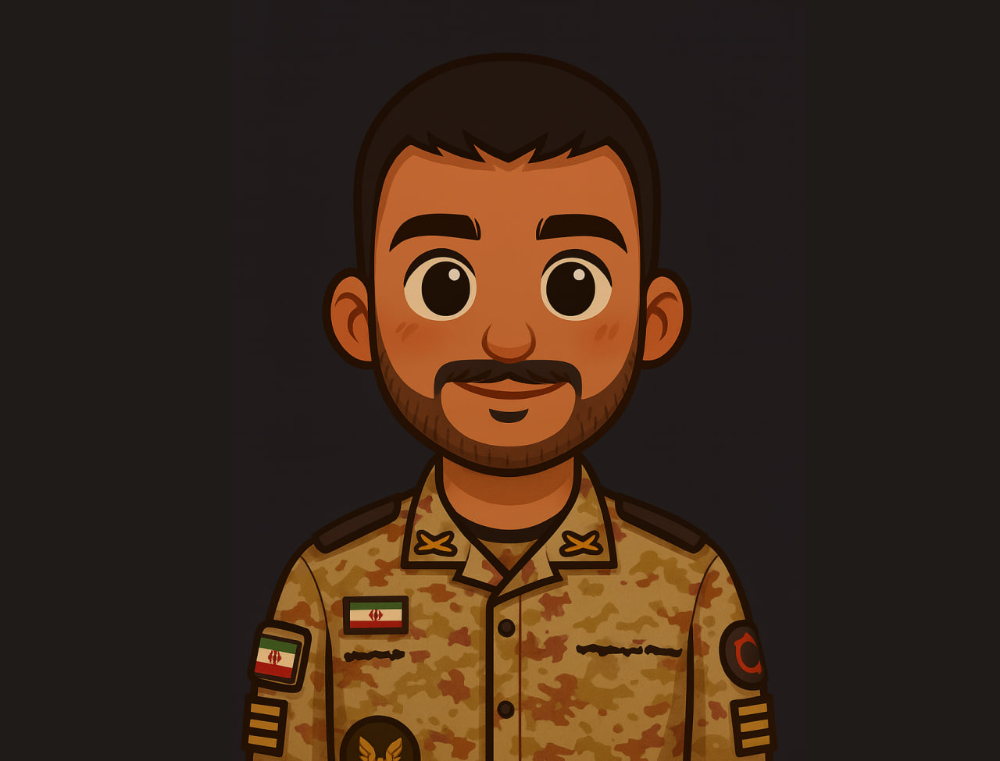

<!doctype html>
<html lang="en">
<head>
    <meta charset="utf-8" />
    <meta name="viewport" content="width=device-width, initial-scale=1" />
    <title>Armin Majidy</title>
    <meta name="description" content="Armin Majidy | آرمین مجیدی" />
    <link rel="stylesheet" href="css/styles.css" />
</head>
<body>
    <div class="container">
        <aside class="panel" id="profileCard" aria-labelledby="fullName">
            <div class="avatar" aria-hidden="true">
                
            </div>

            <header class="profile-header">
                <h1 id="fullName" class="hname" style="white-space:nowrap; margin:10px 0;">
                    Armin Majidy
                </h1>
                <p id="bio" class="bio">
                    Psychologist 💫 Counselor
                    <br />
                    I am a psychologist and counselor dedicated to helping people understand themselves, process emotions, and build practical strategies for healthier, more fulfilling lives.
                </p>
            </header>

            <div id="statsWidget" class="stats-widget" role="region" aria-label="Profile statistics">
                <div class="stats-list">
                    <div class="stat-row">
                        <span class="stat-label">Name</span>
                        <span id="nameValue" class="stat-value">Armin / آرمین</span>
                    </div>

                    <div class="stat-row">
                        <span class="stat-label">Family</span>
                        <span id="familyValue" class="stat-value">Majidy / مجیدی</span>
                    </div>

                    <div class="stat-row">
                        <span class="stat-label">Current age</span>
                        <strong id="ageValue" class="age-value">—</strong>
                    </div>

                    <div class="stat-row">
                        <span class="stat-label">Current location</span>
                        <span id="cityValue" class="stat-value">Sanandaj, Kurdistan of Iran</span>
                    </div>

                    <div class="stat-row">
                        <span class="stat-label">Expertise</span>
                        <span class="stat-value">Greenhouse Cultivation</span>
                    </div>

                    <div class="stat-row">
                        <span class="stat-label">Social</span>
                        <div class="social-links" aria-label="Social links">
                            <a class="social" href="https://t.me/Arminmajidy" title="Telegram: @Arminmajidy" target="_blank" rel="noopener noreferrer">
                                <svg viewBox="0 0 24 24" aria-hidden="true"><path fill="currentColor" d="M9.5 16.5l-.4 4.5c.6 0 .9-.25 1.2-.5l2.9-2.6 6.1 4.5c1.1.6 1.9.3 2.2-1.1L24 3.5c.3-1.4-.5-1.9-1.6-1.4L1.6 10.1C.5 10.6.5 11.6 1.2 12.1l4.7 2.1 10.8-6.9c.5-.3 1 .1.6.5L9.5 16.5z" /></svg>
                            </a>

                            <a class="social" href="https://www.instagram.com/arminmajidy/" title="Instagram: @arminmajidy" target="_blank" rel="noopener noreferrer">
                                <svg viewBox="0 0 24 24" aria-hidden="true"><path fill="currentColor" d="M7 2h10a5 5 0 0 1 5 5v10a5 5 0 0 1-5 5H7a5 5 0 0 1-5-5V7a5 5 0 0 1 5-5zm5 6.2A4.8 4.8 0 1 0 16.8 13 4.8 4.8 0 0 0 12 8.2zm6.4-2.6a1.1 1.1 0 1 0 1.1 1.1 1.1 1.1 0 0 0-1.1-1.1z" /></svg>
                            </a>


                        </div>
                    </div>
                </div>
            </div>

            <footer class="footer" aria-hidden="true">
                &copy; <strong>2025</strong> Armin Majidy — All rights reserved.
            </footer>
        </aside>

        <main class="main" aria-hidden="true">
            <!-- reserved for future content -->
        </main>
    </div>

    <script src="js/app.js" defer></script>
</body>
</html>
